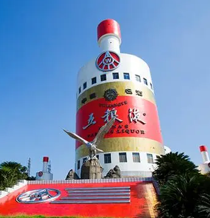
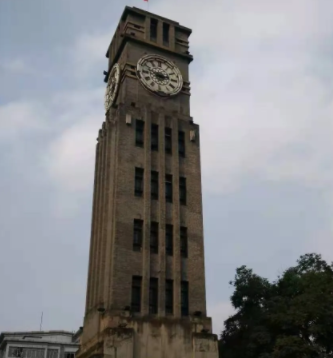
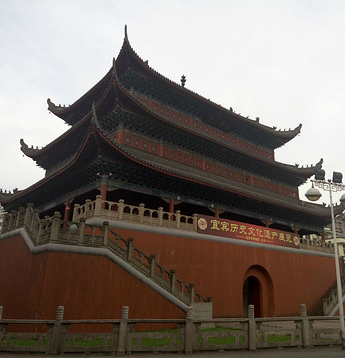

@QA.png)
广电大楼
宜宾广电中心位于南岸市政广场旁,占地30亩,建筑面积39000多平方米,总投资1.8亿元。 整个建筑由主楼、辅楼、演播厅、展厅四个部分构成，广电中心建成后将成为我市重要的标志性建筑,相比早前宜宾的标志性建筑,增添了不少新潮元素。 对于提升城市形象、拓展城市发展空间、推进经济与文化产业布局优化和促进宜宾文化事业发展有着重大意义。

五粮液酒瓶楼
五粮液酒瓶楼外形是五粮液酒瓶,外形奇特,曾入选中国十大丑陋建筑之一。五粮液酒瓶楼是兴建的办公大楼,矗立在彭城广场东边的高台上,形成了一个巨大的五粮液酒瓶,它与酒圣山相对,代表着中国酒王的形象。 酒瓶楼高66.8米,底部直径26米,是目前世界上较大的瓶型建筑物。两旁有两栋小酒瓶楼,与主楼呈“品”字型摆布,意为五粮液要高品质地奉献给社会,奉献给消费者。 酒瓶楼是五粮液集团地心脏,底层是一个抽水站和化验中心;顶层是一个高水塔,中部是五粮液集团的配电总站,设有微机全自动化配电监控中心,集团公司十里酒城的24个无人配电站由这里控制。五粮液酒瓶楼也是宜宾机场导航的重要标志。
钟鼓楼
宜宾钟鼓楼是民国时期宜宾城区最为坚固的一座砖石木结构建筑。钟鼓楼坐北朝南,结构严密,风格别致,主体为正方塔形建筑,楼高30米。 底座边长10.4米,高0.9米,由石级组成;第一层边长5.8米,高6.5米,条石砌墙,南面设门;第二至第五层边长4.7米,层高4米,为砖体墙身,南北两方开窗各4扇, 外置护墙砖柱,南北方各三,东西方各四;第六层为钟楼所在,边长4.5米,高4米,四方设直径2米的时钟度盘;顶盖高2.4米，平顶起坡，内装报时喇叭。 是新中国成立前宜宾老城区的“高层建筑”，当时宜宾百姓盛赞其是：“云南有座鸡足山，离天只有三尺三；宜宾有个钟鼓楼，半截伸到天里头”，该民谚也流传至今。
大观楼
宜宾大观楼,又名谯楼,位于四川省宜宾市翠屏区西街2号,占地约650平方米。谯楼始建于明嘉靖年间,后毁于兵火。 清乾隆二十年(1765年)重建，因其面临滇池，远望西山，尽揽湖光山色而定名为大观楼。宜宾大观楼因形似北京的天安门，在当地有“小天安门”之称。 宜宾大观楼整个楼分四层,楼高28米,长31.6米,宽20.4米,呈长方形。底层用石砌,中有十字形通道,可容车马通行。楼西有两道各29级的石梯,直通楼厅。 宜宾大观楼建筑沿袭了中国传统的建筑风格,现为宜宾市图书馆阅览室。2013年5月3日,宜宾大观楼被中华人民共和国国务院公布为第七批全国重点文物保护单位。
